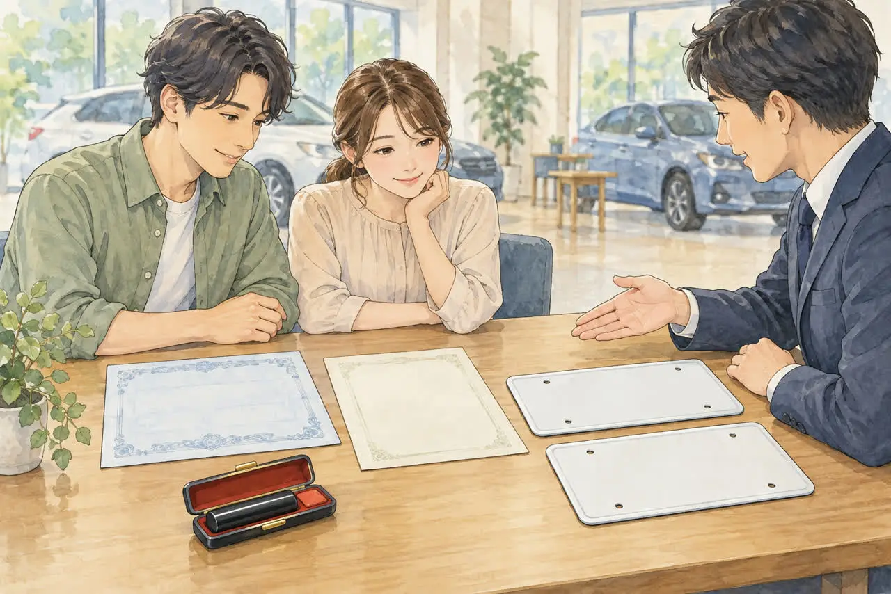
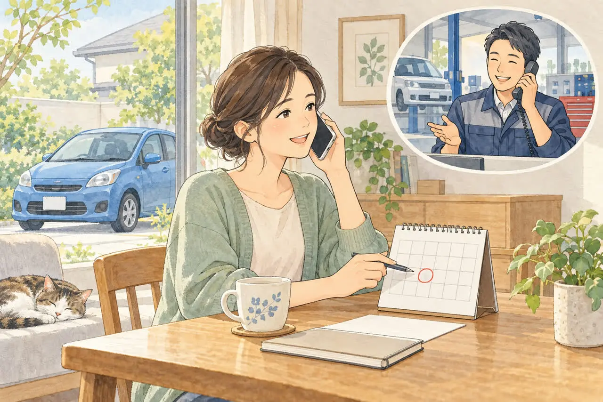
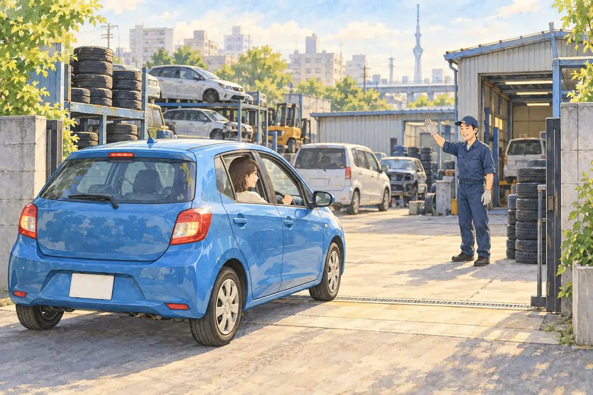

車を自分で持ち込みたい方へ
廃車する車を、自分でお店に持ち込むときの流れ
事前連絡と、必要なもの
公開
こんにちは、東京都足立区江北で自動車解体・廃車買取をしている「大崎商店 環七店」です。
「車を、自分でお店に持っていってもいい？」
「持ち込みなら、何を準備すればいい？」
「いきなり行っても大丈夫？」
廃車や買取を考えるときに、お店が車を引き取りに来る方法のほかに、ご自身で、車をお店に持ち込む方法もあります。
結論からお伝えすると、自走できて、公道を走れる状態の車なら、持ち込みもできます。 必要な書類は、引き取りの場合と同じです。ただし、事前に、お店へ連絡してから持ち込むのが、大切です。
この記事では、持ち込みで廃車にするときの流れと、持ち込む前に確認したいことを、やさしくご紹介します。後半では、足立区の大崎商店の場合もご紹介します。
① 持ち込みと、引き取りの違い

廃車や買取の依頼の方法は、大きく2つあります。
| 比較項目 | 引き取り | 持ち込み |
|---|---|---|
| 車を運ぶのは？ | 依頼先がレッカーや積載車で取りに来る | お客様が自走、または手配した積載車等で運ぶ |
| 向いている車 | 動かない車、事故車、車検切れの車など | 自走できて、公道を走れる車 |
| 必要な書類 | 同じ | 同じ |
| 費用 | 依頼先・場所・車の状態によって異なる | 自走なら依頼先の引き取り料は不要。積載車等を手配する場合は運搬費を確認 |
主な違いは、車を誰が運ぶかです。 同じ車・同じ手続きを依頼するなら、基本となる書類は共通です。ただし、必要書類や費用は車の登録状況・依頼先・運搬方法によって異なるため、事前に確認しましょう。
② 自分で運転して持ち込むには、公道を走れることが必要です
車を自分で運転して持ち込むには、公道を走れる状態であることが必要です。
- 車検が有効であること：車検が切れた車は、公道を走れません。 くわしくは、車検切れの車は公道を走れない。どうやって廃車にする？の記事をご覧ください
- 自賠責保険が有効であること：自賠責保険・共済に未加入、または期限が切れた状態で運行すると、罰則の対象になります（国土交通省の案内）
- 任意保険：持ち込み中も必要な補償が続くように、解約・車両入替・中断証明書などの手続き日を、事前に保険会社へ相談してください
- 登録・届出が有効で、ナンバープレートが正しく取り付けられていること：自走する前に外さないでください
- 安全に走行できる状態であること：ブレーキやタイヤなどに不具合がある車は、車検が残っていても無理に運転しないでください
車検切れ・自賠責切れ・自走できない車は、ご自身で運転して持ち込むことはできません。依頼先に引き取りを頼むか、積載車等での搬入について、受け入れ先・日時・運搬費を事前に相談してください。
保険の手続きについては、事故を起こしたときの保険の使い方の記事をご覧ください。
③ 持ち込むときに必要なもの

同じ車・同じ手続きであれば、持ち込みと引き取りで基本となる書類は共通です。以下は、通常の廃車を紙の書類で依頼する場合の準備の目安です。必要書類・通数は依頼先に確認してください。
普通車の場合
- 車検証の原本（電子車検証の場合は、ICタグ付きの車検証本体。最新の自動車検査証記録事項もあれば一緒に）
- ナンバープレート（前後2枚）
- 所有者の印鑑登録証明書（申請日に発行から3か月以内となるもの。取得前に申請予定日・通数を確認）
- 実印
軽自動車の場合
- 車検証の原本（電子車検証の場合は、ICタグ付きの車検証本体。最新の自動車検査証記録事項もあれば一緒に）
- ナンバープレート（前後2枚）
※自動車検査証記録事項だけでは、車検証本体の代わりにはなりません。 車検証をなくした場合は、持ち込む前に依頼先へ伝えてください。
※ナンバープレートは廃車手続きで返納しますが、自走中は車に取り付けたままにしてください。到着後の取り外し方法は、依頼先に確認しましょう。委任状・譲渡証明書（普通車）・申請依頼書（軽自動車）などの記入も必要になるため、用意する書類と実印の持参・事前押印の方法を依頼先に確認してください。
※車検証と今の住所・氏名が違う、所有者が別の人、ローンが残っているなどの場合は、追加の書類が必要です。持ち込む前に、お店へご相談ください。 くわしくは、廃車に必要な書類チェックリスト（普通車）、軽自動車の廃車に必要な書類・準備チェックリストの記事をご覧ください。
そのほか、持ち込む前に
- 車内の私物を、降ろしておきましょう
- ETCカードやドライブレコーダーのメモリーカードを取り出し、ナビの登録住所・電話帳・スマホとの接続情報などを削除しておきましょう
- 車の鍵・スペアキーも、依頼先に確認して持参しましょう
- リサイクル券が見つからなくても、廃車はできます。くわしくは、リサイクル券をなくしたら？廃車できる？預託状況の確認方法と、代わりの書類の記事をご覧ください
④ 持ち込みの流れ
- お店に電話する：車種、年式、車の状態、自走できること、車検の期限を伝えます
- 持ち込みの日時を決める：お店と相談して、決めます
- 車を持ち込む：確認した書類と鍵を持参し、自走の場合はナンバープレートを付けたまま向かいます。積載車等の場合は、決めた場所・時間に搬入します
- 査定と、金額の確認：費用の内訳と、最終的に受け取る金額・支払う金額を確認し、内容に納得してから契約します
- 書類の記入と、押印：必要な書類に、記入・押印します
- 車の引き渡しと精算：車・鍵・書類を引き渡し、支払い方法と時期を確認します。車種や状態によっては、その場で現金買取する依頼先もあります
- 引き渡し後の手続きを確認する：普通車の一時抹消・永久抹消、軽自動車の一時使用中止・解体返納など、依頼する手続きの種類・完了予定・完了確認書類を確認します。保険会社には、引き渡し日と必要な証明書を伝え、事前に相談した解約・車両入替・中断等の手続きを進めます
手続きの種類は、「一時抹消」と「永久抹消」の違いをやさしく解説｜廃車はどちらを選ぶ？の記事を、日数は、廃車手続きはどれくらいで終わる？日数の目安と、早く終わらせるコツの記事をご覧ください。
⑤ 持ち込む前に、必ず連絡しましょう

持ち込みのときは、必ず、事前にお店へ連絡してください。
- お店の営業時間と、対応できる人の予定があります。急に持ち込むと、対応できない場合があります
- 日時を決めておくと、受け入れや書類確認の準備をしやすくなります。当日の状況でお待ちいただく場合もあります
- 持ち込む車の状態（自走できるか、車検が残っているか）を伝えると、持ち込み先も案内してもらえます
- 持ち込んだあとは、ご自身の車がありません。お店からの帰りの手段（最寄りの駅やバス停、時刻）も、あらかじめ確認しておきましょう
任意保険の中断証明書や、解約の進め方は、「任意保険の中断証明、廃車のときに忘れずに」の記事をご覧ください。
よくある質問
Q. 予約なしで、持ち込んでもいいですか？
A. 事前に、お店へ連絡してください。対応できる人がいない場合があります。
Q. 持ち込みと、引き取りでは、書類は違いますか？
A. 同じ車・同じ手続きを依頼する場合、基本となる書類は共通です。必要な書類・通数・記入方法は、事前に依頼先に確認してください。
Q. 車検が切れています。持ち込めますか？
A. 車検が切れた車は、公道を走れないため、ご自身で運転して持ち込むことは、できません。引き取りを依頼するか、積載車等での搬入を相談してください。
Q. 自賠責保険が切れています。持ち込めますか？
A. 自賠責保険が切れた車で、公道を走ると、罰則の対象になります。ご自身で運転して持ち込むことはできません。引き取りを依頼するか、積載車等での搬入を相談してください。
Q. 任意保険は、いつ解約すればいいですか？
A. 持ち込み中の補償が途切れないよう、事前に保険会社に連絡し、引き渡し日や解約・車両入替等の手続き日を相談してください。廃車にしても保険は自動解約されません。
Q. 持ち込みでも、買取の金額は、事前にわかりますか？
A. 車種や状態によって異なります。お店に連絡するときに、車の情報を伝えると、案内してもらえます。
大崎商店の場合：車のお持ち込み
ここからは、足立区の大崎商店の場合をご紹介します。

大崎商店では、車のお持ち込みを、どこからでも歓迎しています。引き取りに行く手間がかからないため、お店としても、助かります。
ただし、必ず、事前にお電話ください。 急にお持ち込みいただいても、対応できる者がいない場合があります。引き取りなどで外出していることも多いため、お電話いただければ、受け入れの可否や、ご案内できる日時をお伝えできます。
- 持ち込み先の基本：車検が残っていて、自走できる車は、環七店です。解体を前提とする車や、自走できない車は、入谷店が受け入れます。電話で話がまとまっていれば、どちらの店舗でも、お受けできます
- 費用：ご自身で持ち込む場合、当店から引き取りに伺う費用はかかりません。お客様が別の業者に積載車等を手配する場合、その運搬費は手配先にご確認ください。その他の費用案内は、下にまとめています
- 書類：引き取りの場合と、同じです。事前に、お電話でご案内します
- ナンバープレート：取り外しは、お店で行います。お客様が外す必要はありません。外すと、公道を走れなくなりますので、付けたまま、お持ち込みください
- お帰りの手段：最寄りの駅は、西新井大師西駅（舎人ライナー）です。バスは、環七沿いの「上沼田団地入口」バス停から、西新井行・王子行・赤羽行があります（同じ乗り場から、西新井駅・赤羽駅東口方面は国際興業バス「赤27」、王子駅前方面は都営バス「王49」）。時刻表は、赤27の時刻表、王49の時刻表でご確認ください（時刻は変わることがあります）
- お支払い：車種や状態によっては、その場で現金買取も可能です。お支払いする金額は、事前にご案内します
- リサイクル料金：解体する車の預託済み料金は、処理に使われるため返金できません。修理して再販売する車・引き続き使用する車は、リサイクル料金相当額（資金管理料金を除く）を車両の買取価格に上乗せしてお支払いします
- ご相談しやすさ：環七店は、社長がいる店のため、買取価格などのご相談も、しやすくなります
お電話の際は、次の内容をお伝えください。
- 車種・年式・車の状態
- 自走できるか、車検の期限
- 持ち込みたい日時
大崎商店では、
- 解体費用・手続き代行費用・印紙代は別請求しません
- 足立区内は、引き取り無料
- 足立区外も、買取価格がつかない車は、環七店から片道約30分圏内は引き取り無料
- 買取価格がつく車は、圏外でも、所在地と車の状態によっては無料で引き取り（事前にご案内します）
- 車のお持ち込みは、どこからでも歓迎（基本は環七店。日時は、事前にお電話でご相談ください）
車のお持ち込みも、大崎商店にご相談ください
電話で相談する 03-3854-4141メールで相談する（フォーム）ご来店の前に、お電話ください。引き取りなどで外出していることもあり、お電話いただければ、受け入れの可否や、ご案内できる日時をお伝えできます。
大崎商店 環七店
電話：03-3854-4141
〒123-0872
東京都足立区江北7丁目1−3
営業時間：月〜土 10:00〜18:00
休業日：日曜・祝日
環七沿い／舎人ライナー
西新井大師西駅
大崎商店 入谷店
電話：03-3899-2837
〒121-0836
東京都足立区入谷7丁目5−11
営業時間：月〜土 9:30〜17:30
休業日：日曜・祝日・第2土曜
引き取りやご相談のお電話は、環七店がスムーズです。お電話の際は、「車を持ち込みたい」とお伝えください。車検証（または自動車検査証記録事項）をお手元にご用意いただくと、ご案内がスムーズです。
※掲載のイラストはAIで作成したイメージです。実際の店舗・役所の窓口を撮影したものではありません。
参考：国土交通省・もしも、自賠責保険・共済に加入していないと／国土交通省・抹消登録申請に必要な書類／東北運輸局・一時抹消登録／国土交通省・電子車検証のよくあるご質問／軽自動車検査協会・解体返納